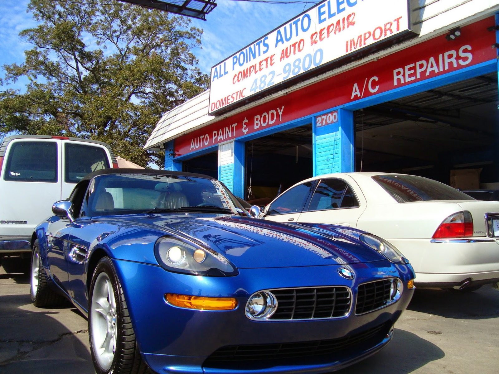

Repair orderEstimate request
Auto electrical · East 7th St, Austin
Electrical trouble. Found and fixed.
Dead windows, no-starts and hard-to-trace faults. We track down the real cause.
- Shop
- All Points Auto Electric
- Town
- Austin, TX
- Call
- (512) 482-9800
- Rated
- 4.9 on Google

Section A
What we do
Auto electrical diagnostics and repair for domestic and import cars, trucks and SUVs.
Electrical diagnostics
Scan tools and careful testing to find the actual fault, even when other shops could not.
- Scan tool diagnostics
- Wiring and sensors
- Cars, trucks and SUVs

Windows and no-starts
Window motors and switches, plus cars that will not start. Towed in and back on the road fast.
- Window motor repair
- No-start repair
- Parts ordered for you

Spark plugs and engine work
Spark plug replacement and under-hood electrical work on domestic and import vehicles.
- Spark plug replacement
- Ignition checks
- Domestic and import

Section B
How a repair goes
- STUB 1
Call or stop by
Tell the crew what the car is doing. Tow it in if it will not start.
- STUB 2
Find the fault
Testing and diagnosis first, so you pay for the real problem.
- STUB 3
Fix and call you
Parts ordered if needed, repair done, and a call when it is ready.
Section C
On the lot


4.9 · 483 Google reviews
Drivers on All Points
All Points Auto Electric, Eddie and his Crew did a great job on our Ford Mustang convertible. The driver side window was not working. We thought it was just the switch but on an 11-year-old car, it turned out to be the motor. Eddie and his crew ordered a new motor from Ford dealership in Dallas, had this fixed within 4 days of dropping off our car.
Highly recommend! We took our car to two other places before here and were beginning to think our car was just unfixable. Even the Toyota center couldn’t figure out what was wrong! Eddie and his team were so helpful and we could tell they put a lot of effort into servicing our car and we’re so thankful they were able to fix it up!
Eddie and his team are great. They recently replaced our spark plugs on our 2017 Toyota 4Runner and it has run really well through two long road trips this summer. We were able to get the appointment on their schedule quickly and Eddie charged a fair price. It is nice to know a mechanic who knows what they are doing and is transparent and trustworthy. Highly recommend.
Shop notes
East 7th, under the big sign
The sign out front reads complete auto repair, domestic and import. The shop brings over 30 years of repair experience to every car.
Dead window motors, cars that will not start, problems other shops could not solve. Helpful, transparent and quick to book.
- Diagnose firstWe find the real electrical fault instead of guessing.
- Fast turnaroundQuick appointments and quick repairs.
- Straight talkClear answers and honest, fair pricing.